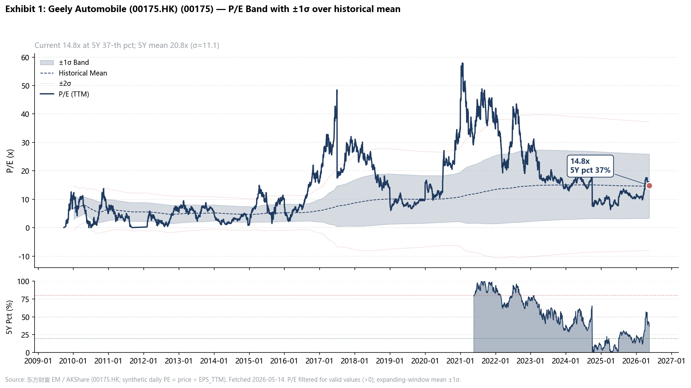

1. 投资论点 (Key Thesis)
1.1 Bull Case
核心逻辑：极氪高端化突破 + iHEV切入全球燃油车替代市场 + 出海提速，三条主线同时兑现
- 极氪品牌基因确认：9X/8X双爆款验证"团队力+产品力+渠道力"三要素齐备。9X单车利润7-8万元、8X约4-5万元（GPM >38%），对标BBA 30-50万区间。品牌成功从偶然→巧合→基因确认 ← 卖方分析师交流 2026-04-21
- iHEV差异化第二牌：全球年销约9000万台，5000-6000万台仍是传统燃油车。吉利iHEV可切入丰田HEV主导的全球市场，比亚迪在HEV领域为零产品 ← BOCI分享 2026-04-30
- 出海提速：Q1出口20.3万辆+126%，全年目标75万辆。轻资产+合作伙伴双轨（不建海外厂），管理层明确"格局太小了"——从全球9000万台视角定义空间 ← 26Q1 post call
- 盈利拐点兑现：26Q1收入838亿+15%，核心净利45.6亿+31%，单车净利6430元创近五年新高。管理层指引"二好于一、三好于二、四好于三" ← 26Q1 post call
- 估值向BYD收敛：Citi 4月报告明确提出"Valuation Converges towards BYD amid 2Q Theme"，TP从HK$25→HK$30 ← Citi 30420826
关键假设：极氪第三款爆款确认品牌基因；欧盟反补贴税不升级；iHEV技术路线被海外市场接受
1.2 Bear Case / 空头逻辑
- 极氪品牌持续性未验：9系成功率行业仅20-30%，需第三款爆款才能确认品牌基因。五一周订单从1万+回落至8000台 ← 招商渠道分享 2026-05-07
- 出海关税风险（已量化）：① 俄罗斯：报废税+118%（2025年1月起），吉利俄罗斯2025年销量-43%，零本地产能，每次报废税上调直接侵蚀单车利润；② 欧盟：BEV反补贴税28.8%（Geely特定18.8%+10% MFN），领克PHEV豁免仅10%（比BEV少18.8pp）；③ 墨西哥：2026-01-01起50%关税（前20%），COMPAS工厂竞标未定；④ 整体出海高度依赖CBU直出，CKD工厂（越南/埃及/印尼）逐步建立但体量仍小 ← 出口关税深度研究 2026-05-21 · BOC专家访谈
- 国内价格战回归：高端化开闸后若需求不及预期，9系对策款淘汰将挤压库存和利润 ← CMS策略会
- 估值已反映乐观：Citi TP HK$30 已从年初HK$25涨20%，股价从HK$12.9涨至HK$24.4（+89% YTD），进一步upside需新催化
- 原材料成本压力：锂电池/内存芯片/铜等综合单车成本增加五六千元 ← BYD 26Q1交流
1.3 Tail Risk
| 场景 | 概率 | 影响 | 监控信号 |
|---|---|---|---|
| 欧盟反补贴税升级或扩展至iHEV | Medium | High — 出海利润率压缩 | 欧盟委员会审查进展；中欧谈判 |
| 极氪渠道/产能瓶颈 | Medium | Medium — 交付不及预期 | 月度交付量；渠道库存 |
| 全球经济衰退压制汽车需求 | Low-Med | High — 高端车首当其冲 | 全球PMI；消费者信心指数 |
| 新能源补贴退坡 | Medium | Medium — 国内销量承压 | 财政部政策发布 |
| 极氪重大品质事件 | Low | High — 品牌信任崩塌 | 社交媒体舆情；召回公告 |
1.4 近期股价 Driver 复盘
将市价行为 map 到论点。更新节奏：月度销量公告 + 季度财报后。区分"宏观/板块联动"（外因）vs"公司基本面"（内因）。 最后更新：2026-05-21
2026 YTD 股价驱动因子
| 时间段 | 驱动因素 | 方向 | 内/外因 | 论点意义 | 状态 |
|---|---|---|---|---|---|
| 2026-01 ~ 04-09 | 极氪9X/8X双爆款 + Q1出口+126% + 月销创新高 | ↑ (+89% YTD至4/9) | 内因 | ✅ Bull #1 高端化 + Bull #3 出海双验证 | 持续兑现 |
| 2026-04-02 | 美国汽车进口关税25%宣布 | ↓ (单日-7%) | 外因·板块联动 | ⚠️ 吉利对美直接出口敞口极小（主力：欧洲/东南亚），影响有限 | 已大幅缓解（5/12停火） |
| 2026-04-29 | Q1 GAAP NI -26.6% 被市场误读 | ↓ | 内因·信息噪音 | ✅ 核心NP +31%；GAAP失真因FX收益←→损失Base效应；见 §6.3 Deep Dive | 消化中，但无实质恶化 |
| 2026-05-12 | 中美日内瓦"关税休战"90天协议 | ↑ (当日冲高) | 外因 | 降低出口地缘风险；对吉利出海逻辑正面 | 持续（90天内有效） |
| 2026-05-13 | 比亚迪新一轮价格战（22款补贴5.3万） | ↓ (单日-5.23%) | 外因·板块联动 | ⚠️ Bear #3 信号；银河10-20万区间直接竞争，极氪/出口敞口有限 | 持续观察 |
| 2026-05-15 | 美债30年期突破5%，港股系统性承压 | ↓ | 外因·宏观 | 与基本面无关，压制港股整体估值倍数 | 持续（宏观变量） |
当前定价分析（截至 2026-05-21）
压制因素（当前定价折价的来源）
| 因素 | 类别 | 可消除性 |
|---|---|---|
| 美债>5% 压制港股估值 | 外因·宏观 | 随美联储降息周期消除 |
| 银河 YoY 连续2月负增（3月-8%，4月-5.8%） | 内因·基本面信号 | 5-6月销量数据是关键验证点 |
| BYD价格战压制板块情绪 | 外因·行业 | 若BYD打完即停，短期 |
| Q1 GAAP NI 消化期 | 内因·信息噪音 | Q2业绩发布自然消化 |
| 极氪8X上市热度后退（周订1万+→8000） | 内因·正常回归 | 6-7月能否进3万+梯队是关键 |
支撑因素（当前估值 floor）
| 因素 | 量级 |
|---|---|
| 管理层密集回购（年内18.85亿港元，1.08亿股） | 实质护盘信号 |
| 出口连续2月破8万辆（+245% YoY） | Bull #3 持续兑现；出口增量利润~46亿/年，完全对冲关税逆风~10亿 |
| 极氪历史最高月销（4月31,787，+132%） | Bull #1 高端化验证 |
| 全员买入，TP均值27.93港元（+33% 隐含） | 机构定价锚 |
| FY26E core PE ~9-10x（vs BYD ~22x） | 绝对估值便宜 |
| 关税逆风已量化：bear case -10亿（俄罗斯+墨西哥） | vs FY26E Core NP 170-213亿，影响5-6%，可管理 |
下一个 re-rating 触发器
| 触发器 | 预期窗口 | 若兑现：影响 |
|---|---|---|
| 极氪月销进入3万+第一梯队（孙总判断6-7月） | 2026-06 ~ 07 | Bull #1 品牌基因三款验证，PE向BYD收敛 |
| 5月出口能否守住8万+（连续3月） | 2026-06-01（5月数据发布） | Bull #3 出海逻辑进一步确认 |
| 银河YoY恢复正增长 | 2026-06-01（5月数据） | 消除"银河增速见顶"Bear担忧 |
| 26Q2业绩 — 管理层"二好于一"兑现 | 2026-08 | 若核心NP>45.6亿，论点进入加速兑现期 |
| 国际大油商产能合作公告落地 | TBD（管理层暗示"不久"） | 出海 二阶催化，重新定价出海天花板 |
| 墨西哥COMPAS工厂竞标结果公告 | TBD（2026 H2预期） | 若胜出：逆转6.9亿关税拖累，+卖方上调TP |
2. 关键指引 (Key Guide)
26Q1 业绩实绩（[2026-04-30 post call](visiting%20record/汽车/2026-04-30_吉利汽车_26Q1业绩post call会议纪要_V1.md)）:
- 总收入 838亿元（+15% YoY）
- 毛利率 17.5%（+10pp YoY）
- 核心归母净利润 45.6亿元（+31% YoY）
- 单车核心净利润 6,430元（+30% YoY，创近五年新高）
- Q1出口 20.3万辆（+126% YoY）
管理层全年指引（← 26Q1 post call）:
- 全年出口目标 75万辆
- 盈利节奏："二季度好于一季度，三季度好于二季度，四季度好于三季度"——逐季向上
- 极氪8X日订单 300+台，上市半小时大订过万（管理层未给 8X 单车型内销年度目标）
国内销量 guide（管理层未独立披露，全部为卖方反推）:
- 管理层口径：总 345 万 − 出口 75 万 = 国内 270 万（+3.7% YoY，2025A 国内 260.4 万） ← 2025-12销量+2026目标
- 卖方接受总量 345 万：Citi 30414219 (FY26/27 vol 345/360 万) + Citi 30414029 (FY26 target 345 万)
- 卖方 Rev/ASP 反推更激进 5-15%（隐含国内）：
- 国信 0330：Rev 4,344 亿 → 隐含总量 ~362 万 / 国内 ~287 万（+10% YoY）
- 中泰 0505：Rev 4,823 亿 → 隐含总量 ~370 万 / 国内 ~295 万（+13% YoY）
- 国联 0420：Rev 4,883 亿 → 隐含总量 ~375 万 / 国内 ~300 万（+15% YoY）
- 极氪子项独立 guide：30 万 +34%（vs 2025A 22.3 万）← 国联 0420
- 节奏验证（②推断）：2026 年 1-4 月国内累计 65.8 万（仅完成 270 万的 24%，理论应 33%）→ 下半年需月销 25-26 万（vs 26-04 实际 15.2 万）才能达成；iHEV Q3 起量 + 银河新车 + 国补 = 三大驱动 ← 见本页 §8.7 月度销量明细 + 1Q26 销量增速
3. 业务结构备忘 (Other Key Facts)
| 品牌 | 定位 | 2026 关键动态 |
|---|---|---|
| 极氪 ZEEKR | 高端纯电/混动，对标BBA | 9X/8X双爆款，月销目标3.5-4万台，GPM >38% |
| 银河 Galaxy | 中端新能源主力 | 产能逼近百万，沈阳新工厂改造缓解瓶颈 |
| 吉利主品牌 | 大众市场 | iHEV技术外溢，国内+出海均衡 |
| 领克 Lynk & Co | 年轻化中高端 | 与沃尔沃共享技术平台 |
| 沃尔沃（关联方） | 豪华品牌 | 技术反哺吉利安全/驾驶体验 |
Peers 对比数据（← OA OEM Study 2026-04-27）：
出口排名 & 销量（2025A / 1Q26A）
| 公司 | 2025 总销量(万) | 2025 出口(万) | 出口占比 | 1Q26 出口(万) | YoY |
|---|---|---|---|---|---|
| Geely | 302 | 42.10 | 13.9% | 20.30 | +126% |
| Chery | 281 | 134.4 | 47.8% | 39.33 | +54% |
| BYD | 460 | 104.5 | 22.7% | 20.6 | +103% |
| GWM | 132 | 50.61 | 38.3% | 13.01 | +43% |
Geely 1Q26 出口增速 +126% 为四家最高。出口占比 13.9% 远低于 Chery/GWM，出海提升空间最大
ASP 国内 vs 海外（FY25 出厂价口径）
| 公司 | 海外 ASP (RMB k) | 国内 ASP (RMB k) | 溢价率 |
|---|---|---|---|
| Geely | 134.5 | 97.6 | +37% |
| BYD | 186.2 | 127.4 | +46% |
| Chery | 122 | 106.9 | +14% |
| GWM | 186 | 157 | +18% |
Geely 海外溢价 37% 仅次于 BYD（46%），高于 Chery（14%）和 GWM（18%）
单车利润 国内 vs 海外（FY25）
| 公司 | Mixed (RMB/车) | 海外 | 国内 | 海外/国内倍数 |
|---|---|---|---|---|
| Geely | 5,570 (FY25: 6,588) | 13-15k | Galaxy 3k / ZEEKR higher | ~4x |
| BYD | 7,091 (FY25: 9,426) | 20k | 2,450 | 4.3-8x |
| Chery | 7,224 (FY25: 5,423) | 未公开 | 未公开 | ~3x est |
| GWM | 7,456 (FY25: 10,243) | GPM 16.7% | GPM 18.6% | 倒挂 |
NEV 渗透率 5年趋势（国内 vs 海外）
| 区域 | FY22 | FY23 | FY24 | FY25 | 1Q26 |
|---|---|---|---|---|---|
| Geely 国内 | 23% | 29% | 41% | 56% | 52% (3月55%) |
| Geely 海外 | n/a | ~5% | ~12% | 29.5% | 60%+ |
海外 NEV 渗透率从 12%→60%+ 的跳升验证了极氪/银河出海的产品力
海外销量 Top 5 国家（FY25）
| # | 国家 | 备注 |
|---|---|---|
| 1 | 俄罗斯 ~21万(FY24峰值) → FY25 -43% | 最大单一市场；2025年报废税冲击，零本地产能 |
| 2 | 墨西哥 ~7万 | 墨西哥工厂竞标中（路透独家） |
| 3 | 巴西 ~3万 | 12月起飞 |
| 4 | 秘鲁 ~1.5万 | 零关税（中秘自贸） |
| 5 | 澳洲 ~1.2万 | 零关税（中澳自贸） |
海外工厂 Top 5（2026Q1 状态）
| 位置 | 产能(万/年) | 状态 | 关税影响 |
|---|---|---|---|
| 马来西亚 Proton | 33-37 | 全面投产(49.9%持股) | 20-40%→0% |
| 沃尔沃欧洲(Ghent+Torslanda) | ~25 | 全面投产 | 欧盟内部0% |
| 沃尔沃 USA Charleston | ~10 | 全面投产 | Made in USA→0% |
| 越南 Tasco/Geleximco | 7.5 | 在建(2026H2投产) | 30%→0% |
| 白俄罗斯 BelGee | 设计6/实际~1 | 运营中(制裁缩减) | 15%+报废税→0%+报废税 |
吉利"不建海外厂"指的是不自建新工厂，但通过 Proton/沃尔沃/JV 已有 75+ 万辆/年海外产能——实质上是"轻资产方式获得了重资产结果"
全球 HEV 市场份额（FY25）— 支撑 iHEV 论点
| 品牌 | HEV 销量(万辆) | YoY | 全球份额 |
|---|---|---|---|
| 丰田 | 443.35 | +7.0% | 67.8% |
| 本田 | 82.50 | +4.2% | 12.6% |
| 现代+起亚 | 109.78 | +30%+ | 16.8% |
| 吉利 | 11.60 | +48.2% | 1.8% |
| 比亚迪 | 8.90 | +35.7% | 1.4% |
| 长城 | 5.20 | +26.3% | 0.8% |
丰田垄断 67.8% 但增速仅 +7%。吉利 iHEV 增速 +48.2% 为中国品牌第一，但份额仅 1.8%——验证"空间巨大但还在起步阶段"
出口模式：CBU vs CKD 双轨（口径关键）
| 模式 | 含义 | 利润特征 |
|---|---|---|
| CBU 整车直出（月公告数字口径） | 吉利月度公告出口量（如4月8.32万辆） | 利润最优（海外ASP 17.65万 vs 国内10.4万）；暴露进口国关税 |
| CKD 散件出口（不计入整车数字） | Proton（马来西亚，49.9%持股）/ 雷诺韩国（34%）/ 越南Tasco（36%）/ 埃及BAMC | 零部件收入入账；安聪慧：贴牌每车4,000-8,000元纯利额外贡献 |
⚠️ Proton 2025年约16万辆（马来西亚本地）不计入吉利月度出口数字。75万辆全年出口目标 = 纯CBU口径；加上CKD合作方，吉利系全球实际渗透约100万辆级
Source: 出口关税深度研究 2026-05-21
其他静态事实：
- 出海模式：轻资产+合作伙伴贴牌，不建海外厂（李书福指导思想："全球产能已过剩，中国不能再到海外建厂"） ← BOCI分享
- 出海区域：欧洲（新能源高端主战场）、东南亚（宝腾合作）、南美（雷诺JV）、俄罗斯（约21万台/年） ← BOC专家访谈
- 比亚迪软肋（管理层口径）：HEV/油车空白 + 豪华高端化难跨界 ← BOCI分享
- iHEV vs 日系HEV：可替代丰田全球5000万台市场，吉利 HEV 增速 +48.2% 中国第一但份额仅 1.8% ← OEM Study · 卖方分析师交流
4. Recent Updates
近 90 天事件聚合。分桶：公司公告 > 监管·政策 > 竞品 > 券商研报 > Meeting Minutes > 新闻。每条摘要针对吉利，非通用 frontmatter
最后聚合：2026-05-21 12:23（近 90 天，自动）
🔬 近期研究 Activity & Task（3 条）
- [2026-05-21] 研究问答：吉利出口退税政策、主要市场关税、CKD结构深度研究
- 出口退税政策对吉利整车出口形成约1.38万元/辆的利润支撑，是当前出口定价竞争力的核心基础，但2027年电池退税取消将带来约3000-3600元/辆的隐性成本压力。主要市场关税分化明显：俄罗斯报废税跳升导致销量同比下跌43%+，欧盟对BEV征收28.8%关税而PHEV仅10%的税率差异利好领克混动车型，墨西哥关税升至50%使本地建厂需求迫切。CKD模式虽利润低于CBU但能有效规避关税壁垒，吉利通过…
- [2026-05-21] 研究问答：吉利4月高点至今回撤原因分析 + Q2跟踪锚点更新
- 吉利汽车4月高点至今回撤约12-15%，主因是Q1 GAAP净利被市场误读（核心NP同比+31%创5年新高）、BYD价格战板块联动及美债利率压制，而非基本面恶化。极氪月销历史新高、出口连续破8万辆是正面支撑，但银河YoY连续负增长和领克承压需跟踪。当前机构全员买入、共识目标价隐含33%上行空间，公司回购护盘，回撤更多是外部噪音和板块情绪冲击
- [2026-05-21] 研究问答：吉利出口关税对 Margin 的量化影响估算（FY26维度）
- 出口关税对吉利FY26核心利润的拖累约10亿元（俄罗斯报废税再调-3.4亿、墨西哥50%关税-6.9亿），仅占FY26E Core NP 170-213亿的5-6%，且出口量增量带来的利润增量（+46亿）足以完全吸收。出口退税13%是当前出口ASP溢价的核心支撑，若被切除将损失152亿元定价优势；欧盟PHEV豁免是结构性上行期权，但FY26贡献小于1亿。整体看，出口结构改善带来的GPM提升（+2pp级别）远大于关税拖累（-0.3pp），GPM方向仍向上
📢 公司公告（7 条）
- [2026-05-13] Geely 2025-12销量+2026目标
- 2025-12 23.6817万+13%；2025全年302.4567万+39%。2026目标345万(+14%)新能源222万(+32%)
- [2026-05-13] 吉利汽车回购报表 FF305
- 已实施回购计划
- [2026-04-02] 花旗：升吉利汽车目标价至27港元 买入
- 花旗给予吉利汽车'买入'评级，目标价27港元
- [2026-04-02] 吉利汽车涨超5% 汇丰目标价升至32港元
- 汇丰将吉利汽车目标价由30港元上升至32港元
- [2026-03-24] 吉利汽车26Q1营收837.8亿+15.2%，核心净利45.6亿+31%
- 26Q1营收837.8亿同比增15.2%，核心净利45.6亿增31%，毛利率提升1.8ppt至17.5%，单车盈利0.59万元，显示产品结构优化和成本控制有效。出口占比升至29%支撑增长，但归母净利因汇兑损失下滑26.6%，提示汇率风险需关注
- ...另 2 条见 #10. 近期要点
📰 新闻（12 条）
- [2026-05-15] 30年期美债突破5%，港股整体估值受压，汽车板块随之调整
- 30年期美债收益率突破5%对吉利构成系统性估值压制，港股恒指失守26000点，汽车板块高beta特性使其首当其冲。尽管5月中美关税停火利好曾推动吉利联动走强，但美债压力盖过这一效应，当前吉利FY26E PE约9-10x，低于分析师目标价隐含的33%上行空间，反映宏观利率环境限制了估值倍数扩张，而非基本面恶化
- [2026-05-13] 比亚迪新一轮价格战引发港股汽车板块杀跌，吉利单日-5.23%
- 比亚迪新一轮价格战引发板块联动杀跌，吉利单日跌5.23%但非自身基本面问题，管理层当日回购848万股表态估值低估。对吉利而言，极氪高端定位和出口业务（占收入25%+）提供缓冲，但银河品牌（8-20万区间）与比亚迪直接竞争，若价格战持续将压制该品牌毛利率，需关注国内价格战回归风险
- [2026-05-12] Geely Auto 2025年销量超302万
- 2025年全年销量3024567辆同比+39%，超额完成300万目标。2026年目标345万（含220万新能源）
- [2026-05-12] Geely Auto S&P Global Sustainability Yearbook 2026
- 吉利成为首家也是唯一一家入选S&P Global Sustainability Yearbook 2026的中国车企，CSA评分在全球汽车制造商前5名，获Industry Mover称号
- [2026-05-06] 吉利汽车4月销量23.5万辆，极氪31787辆+132%，NEV渗透率57.7%
- 4月销量23.5万辆、新能源渗透率57.7%连续三月超50%，极氪交付3.18万辆同比+132%创新高，印证高端化与新能源转型加速。出口8.32万辆同比+245%且连续两月破8万，海外市场扩张超预期，支撑全年75万辆出口目标。i-HEV混动技术落地及极氪9X出海计划，有望进一步优化产品结构与毛利率
- ...另 7 条见 #10. 近期要点
5. Key Stats
yfinance 实时数据（收盘 2026-05-21），更新时间 2026-05-21
| 项目 | 数值 |
|---|---|
| Live price | HKD 19.42 (2026-05-21) |
| Market cap | HKD 209,425 mn |
| Enterprise value | HKD 210,928 mn |
| Total cash | HKD 57,756 mn |
| Total debt | HKD 19,604 mn |
| Net cash | HKD 38,152 mn |
| Trailing P/E | 10.3x |
| Forward P/E | 7.3x |
| P/B | 1.93x |
| Dividend yield | 2.2% |
| Beta | 0.48 |
| 52W range | HKD 14.96 – 25.62 |
| Shares outstanding | 10,793 mn |
| GPM (TTM) | 17.0% |
| OPM (TTM) | 5.0% |
| NPM (TTM) | 4.3% |
| ROE | 16.0% |
| Multiple | FY24A | FY25A | FY26E | FY27E | FY28E |
|---|---|---|---|---|---|
| EPS Norm (HKD) | 0.13 | 0.23 | 0.28 | 0.34 | 0.39 |
| EPS GAAP (HKD) | 0.23 | 0.23 | 0.28 | 0.35 | 0.40 |
| DPS (HKD) | 0.04 | 0.06 | 0.08 | 0.10 | 0.12 |
| BVPS (HKD) | 1.18 | 1.28 | 1.51 | 1.79 | 2.08 |
6. Market Consensus
CapIQ Key Stats, USD mn (IFRS)。数据源：
SPGlobal_GeelyAutomobileHoldingsLimited_Consensus_10-May-2026.xlsx。最近更新：2026-05-11
6.1 Annual（USD mn）
| 指标 | FY23A | FY24A | FY25A | FY26E | FY27E | FY28E |
|---|---|---|---|---|---|---|
| Revenue | 25,324 | 33,391 | 48,040 | 61,302 | 71,411 | 79,066 |
| Revenue YoY | n/a | +32% | +44% | +28% | +16% | +11% |
| EBITDA | 1,663 | 2,641 | 3,999 | 5,140 | 6,025 | 6,748 |
| EBIT | 504 | 1,335 | 1,784 | 3,164 | 3,912 | 4,498 |
| NI Normalized | 817 | 1,299 | 2,358 | 2,935 | 3,559 | 4,078 |
| NI (GAAP) | 750 | 2,312 | 2,345 | 3,004 | 3,680 | 4,223 |
| Gross Margin | 15.3% | 15.9% | 16.6% | 17.0% | 17.3% | 17.4% |
| Net Cash | 3,899 | 4,707 | 6,720 | 8,749 | 12,017 | 14,103 |
| FCF | 992 | 3,263 | 6,004 | 5,092 | 4,929 | 5,129 |
| CapEx | 807 | 422 | 2,276 | 1,695 | 1,819 | 1,809 |
| # Analysts (Rev) | 26 | 33 | 27 | 30 | 30 | 26 |
6.2 Consensus Range（FY26E）
| 指标 | Low | Median | High | # Analysts |
|---|---|---|---|---|
| Revenue | 53,714 | 61,053 | 68,753 | 30 |
| EBITDA | 3,929 | 5,094 | 6,393 | 20 |
| EBIT | 2,285 | 3,292 | 4,194 | 26 |
| NI Normalized | 2,283 | 2,986 | 3,722 | 14 |
| NI (GAAP) | 2,400 | 3,037 | 3,728 | 30 |
| EPS Norm (HKD) | 0.22 | 0.28 | 0.33 | 17 |
6.3 Earnings 历史回顾
Source: post call 纪要 + Citi research reports。Actual 数据从管理层/券商报告提取
6.3.1 Quarterly Summary
| 季度 | 收入 (亿RMB) | YoY | GPM | 归母 GAAP (亿) | 核心净利 (亿) | 来源 |
|---|---|---|---|---|---|---|
| 26Q1 | 837.8 | +15.2% | 17.5% | 41.7 (-26.6%) | 45.6 (+31%) | 东吴/中泰 · post call |
| 25Q4 | 1,057.5 | +45.9% | 16.9% | 37.4 | 37.9 | 国信 20260330 · Citi 30414029 |
| 25Q3 | 891.8 | +27% | 16.7% | n/a | 39.6 (+19%) | 新浪 |
| 25Q2 | 778.0 | +27% | 17.0% | 36.2 | 31.6 (+102%) | 新浪 |
| 25Q1 | 725.0 | +25% | 15.8% | 56.7 (+264%) | 35.0 | Geely IR · Citi |
| FY25 | 3,452.3 | +25% | 16.61% | 168.5 (+1.3%) | 144.1 (+36%) | 银河/国信 20260322/0330 |
GAAP NI 与核心 NI 口径差异大。GAAP 含汇兑损益+一次性项目（25Q4 含 11亿电池费用）。Holdings/Coverage 统一用核心净利比较。 25Q2/Q3/Q4 单季度值由 Python 从累计数据计算（H1/Q1Q3/FY 减法）
6.3.2 Quarterly Deep Dive
26Q1（2026-04-30 post call）
Beat/Miss
| 指标 | 实绩 | vs 预期 |
|---|---|---|
| Revenue | 838亿 (+15% YoY) | Beat consensus |
| Core 归母 NP | 45.6亿 (+31% YoY) | Beat 招银预估 9% |
| GAAP 归母 NP | 41.7亿 (-26.6% YoY) | FX 损失 4.97亿 vs 25Q1 FX 收益 30.28亿；GAAP 对比失真，看 Core |
| GPM | 17.5% (+1.7pp YoY, +0.6pp QoQ) | 开源口径 +1.7/+0.6pct；Citi FY26E 目标 18.0% |
| 单车核心净利 | 6,430元 (+30% YoY) 近五年新高 | vs BYD 同期 ~5,700元 — 吉利单车已超 BYD（Citi 30420826） |
| 单车 ASP | 11.8万 (+14.7% YoY) | 收入+15% vs 销量+1%，纯结构升级驱动（中泰） |
① 利润质量拆解
- Core vs GAAP 差异：Core 45.6亿 / GAAP 41.7亿，差额 ≈ FX 损失 4.97亿（中泰）。25Q1 GAAP 含 30.28亿 FX 收益，剥离后 Core +31% 才是真实经营弹性
- 高毛利产品占比：极氪 + 出口合计 40%（+17pp YoY / +5pp vs consensus）— Citi 30417272；Q1 是全年结构最优季（Bear 核心担忧：Q2 能否接力？）
- 费用率改善：管理费 1.6%（25Q1: 2.0%, 25Q4: 2.1%）行业内最优；研发费用化率升至 44%（原被诟病低，改善报表质量）；销售费 +0.2pp（战略性海外渠道投入）
- CFO 前瞻："2-4 季度费用率较 Q1 仍持续优化"——经管/售后/物流仓储等"前台的后台"整合继续释放
- 管理层全年 NP：合规原因不正面确认 220 亿粗算，但对趋势"肯定的"；BOC 罗总独立看 220-250 亿都没问题
② 毛利率 17.5% — 三驱动
| 驱动 | 量化 | 来源 |
|---|---|---|
| 出口占比飙升 | 13.9%(FY25) → 28.6%(26Q1) +14.7pp | 出口单车利润 13-15k vs 国内 Galaxy 3k，结构贡献最大 |
| 极氪高端拉升 | 9X GPM ~40%，8X GPM >38%；极氪品牌 Q1 implied ~25%+ | Citi 30414029；8X 上市后合计 GPM 继续拉升 |
| 研发费用化率 | 44%↑，降低计入当期 COGS | post call；改善 COGS 口径 |
Bear risk：出口 ASP 受汇兑/关税侵蚀 + 国内价格战重现 → GPM 回落主要压力来源
③ 出口 — 量的翻倍之外，质的变化更关键
| 指标 | 25Q1 | 26Q1 | 变化 |
|---|---|---|---|
| 出口量（万辆） | 8.99 | 20.30 | +126% |
| 出口占总销量 | 12.8% | 28.6% | +15.8pp |
| 出口 NEV 占比 | 19.4% | 61.6% | +42pp，3倍跳升 |
| 其中 HEV 出口（辆） | 4,097 | 53,570 | +13倍（iHEV 前哨） |
| 其中 BEV 出口（辆） | 13,324 | 71,585 | +437% |
- Q2 出口已锁定：管理层明确"2Q 不会低于 Q1" → ≥20.3万；4月出口 8.32万（连续 2 月破 8 万，Q1 月均仅 6.77万）→ H1 提前追平 FY25 全年 42 万
- 出口目标升级：原"3×15万+2×10万"→ "3×20万+2×10~15万"，挑战 75 万
- 贴牌部分（韩国雷诺/宝腾/巴西雷诺）：未计入整车销量，按零部件收入入账，每车 4,000-8,000 元纯利额外贡献
- Bear risk：俄罗斯 exposure 约 21 万台/年（FY25）；MS 报"40%占比"被 BOC 罗总质疑，实际约 20-25%
④ 8X/9X — 发布热度 vs 稳态节奏
| 极氪 9X | 极氪 8X | |
|---|---|---|
| 单车净利（卖方口径①） | 7-8万元 | 4-5万元 |
| 单车净利（卖方口径②） | 4-5万元（~10%净利率） | 未单独估算 |
| GPM | ~40% | >38% |
| 定价 | 49.9-80万+ | 35.68-50.08万 |
| Q1 表现 | 50万+区间5个月持续领先；高配交付周期长（供应链限制） | 4月21日上市；29分钟大订破万；Ultra及以上占比 95.6% |
| 日订单稳态 | 持续供不应求 | 300+ 台/日（上市后） |
⚠️ 单车利润 source & 口径（均为卖方估算，公司从未单独披露极氪 NP 拆分）
- 口径①（9X 7-8万 / 8X 4-5万）：← 卖方分析师交流 0421，"管理层与分析师均持此口径"。原文同时写"ASP约70,000元"——疑为"ASP约70万元"的笔误，隐含净利率 ~10-11%，量级合理
- 口径②（9X 4-5万，~10%净利率）：← 卖方分析师 0513，"9X 定价基准50万，单车净利接近10%净利率，单9X贡献40-50亿"。明确用净利率定义，更保守
- 两口径差距成因：ASP 假设不同（高配均价 ~70万 vs 基准 50万），折算净利率均约 9-11%，量级一致，数字本身不矛盾
- 五一之后渠道真实数据（招商孙总 0507）：极氪周订单 → 前几周 1万+/周 → 五一回落 8,000 台/周 → 稳态预期 6,000-7,000 台/周 = 约 2.6-3 万台/月
- 8S+9S 合计 1.7-1.8 万/月；加 007GT 等 → 月销有望 3.5-4 万台，6-7 月或进月销第一梯队（孙总判断）
- 9X+8X 合计全年 NP = Rmb 5.5-6bn，"或超 BYD 350万台国内 EV 总利润" ← Citi 30421402
- Bear risk：50 万以上市场天花板已从 1.4-1.5 万/月下移至 5,000-7,000 台/月算正常（孙总）；ES9 积累订单 4 万台，两雄格局形成
⑤ 叙事结论 — Bear / Base / Bull 各拿什么
| 情景 | PE | 核心叙事 | 关键假设 |
|---|---|---|---|
| Bull | 15x+ | 三条腿同时验证：极氪成品牌基因（月销 3 万+稳住）+ 出口 80 万+新能源占比 50%（单车利润结构跳升）+ iHEV Q3 起量（取代丰田 5,000 万台燃油市场）。单车净利 FY27E 8,000+ | 极氪守住 3 万/月；出口 ASP 不被汇兑侵蚀；iHEV 2026Q4 交付 |
| Base | 13-15x | Volume beta + 部分利润质改善：出口 70-75 万辆兑现，8X/9X 月销 3-4 万台不失守，GPM 17.5-17.7%，FY26 core NP 200-220 亿。不需要 iHEV 爆量 | 无新价格战；出口 Q2 ≥ 20 万兑现 |
| Bear | ~13x | Q1 是全年最好季度（高毛利占比 40% 含季节性出口峰值 + 极氪积压消化）。Q2 管理层只给方向不给数字；8X 五一回落至 8,000 台/周；出口 ASP 受汇兑压；国内价格战重燃 | 极氪月销滑落至 2 万以下；GPM 回落至 17% 以下 |
⑥ 26Q2 实时跟踪锚点（截至 2026-05-14）
| 指标 | 已知 | 待观察 |
|---|---|---|
| 4月出口 | 8.32 万 创月度新高（+245% YoY） | 5/6月是否守住 8 万+ |
| 4月极氪交付 | 31,787 辆 +132% 创新高 | 8X 月销稳态能否达 1.5 万+ |
| 极氪周订单 | 五一后 8,000 台/周（孙总渠道） | 6-7月 3万+/月第一梯队进入？ |
| iHEV | 4月17日技术发布；Q3 首批车型上市 | 预订量作为先行指标 |
| 重大合作 | 管理层暗示"不久将见公告"（国际大油商产能合作） | ← 出海二阶催化，核心 watch |
| 极氪 9X 出海 | 6月底中东首发（转出口已有 ~130 万人民币售价） | 4Q 欧洲 009 焕新版 |
Source: post call 0430 · BOCI 0430 · 卖方交流 0421 · 招商渠道 0507 · BOC 专家 0429 · Citi 30420826 · Citi 30421402 · 开源 0506 · 中泰 0505
25Q4（Citi 30414029, 2026-03-18）
部分数据
- GPM 16.9% (+0.3pp QoQ)
- 调整后核心净利 ~Rmb 4.1bn（+5% QoQ）—— 报表含 Rmb 1.1bn 一次性电池费用
- 极氪 9X GPM 接近 40%；极氪品牌整体 4Q25 GPM ~23%
- R&D +35% QoQ 至 Rmb 5.9bn
⚠️ 完整季度数据待补充。需查找 25Q4 业绩公告或 investor call 纪要
25Q3 / 25Q2（待补充）
⚠️ 未在 vault 中找到 25Q2/Q3 季度业绩明细。待通过以下渠道补充：
- Geely IR 官网 → 季度业绩公告
- 25Q2/Q3 callback notes（如 Onenote sync 中有）
- 历史 Citi/JPM 研报中的季度数据
7. Catalyst Tracking Calendar
| 状态 | 类型 | 事件 | 预期日期 | 进度/信号 |
|---|---|---|---|---|
| 🟡 | 产品 | 极氪月销进入 3 万台第一梯队 | 2026-06/07 | 五一后 8,000 台/周；孙总（招商渠道）判断 6-7 月可能达标 |
| 🟡 | 产品 | 极氪第三款爆款车型发布 | 2026H2 | 8X/9X双爆款已验证，第三款确认品牌基因 |
| 🟡 | 出海 | 全年出口达75万辆 | 2026-12-31 | Q1 20.3万+126%；4月 8.32万（连续2月破8万）；H1 提前追平 FY25 全年 |
| 🟡 | 出海 | 国际大油商产能合作公告落地 | TBD（近期） | 管理层暗示"不久将见公告"——出海二阶催化 |
| 🟡 | 出海 | 极氪 9X 中东出口首发 | 2026-06月底 | 已有转出口流入中东 ~130万/台；6月底官方出口启动 |
| 🟡 | 财报 | 26Q2业绩 | 2026-08 | 管理层"二好于一"；4月出口/极氪交付已领先 Q1 节奏 |
| 🟡 | 技术 | iHEV 首批车型上市 + 预订 | 2026-Q3 | 4月17日技术发布；4-5款车型 Q3 落地；下半年起量 |
| ⏳ | 估值 | 估值向BYD收敛 | TBD | Citi 2Q主题；26Q1 单车净利 6,430元 已超 BYD 5,700元 |
| ⏳ | 监管 | 中欧反补贴税最终方案 | TBD | 已转向最低价格承诺机制；吉利加征税率 18.8% |
Legend: ⏳ pending · 🟡 in_progress · 🟢 near_target · ⚠️ due_soon · ✅ hit · ❌ missed
8. 财务数据（亿 RMB）
T2: AKShare
stock_financial_hk_report_em("00175","利润表","报告期")，fetched 2026-05-11。Forward: CapIQ consensus (USD mn)

8.1 Revenue & Profitability（Annual, T2 AKShare）
| 项目 | FY22A | FY23A | FY24A | FY25A |
|---|---|---|---|---|
| Revenue | 1,479.6 | 1,792.0 | 2,759.1 | 3,452.3 |
| YoY | n/a | +21.1% | +54.0% | +25.1% |
| Gross Profit | 209.0 | 274.2 | 458.0 | 573.5 |
| GPM | 14.1% | 15.3% | 16.6% | 16.6% |
| Operating Profit | 36.5 | 38.1 | 160.3 | 176.9 |
| OPM | 2.5% | 2.1% | 5.8% | 5.1% |
| PBT | n/a | 49.5 | 181.3 | 202.3 |
8.2 Semi-Annual 拆分（T2 AKShare）
| 项目 | 22H1 | 22H2 | 23H1 | 23H2 | 24H1 | 24H2 | 25H1 | 25H2 |
|---|---|---|---|---|---|---|---|---|
| Revenue | 581.8 | 897.8 | 731.8 | 1,060.2 | 1,187.9 | 1,571.2 | 1,502.8 | 1,949.5 |
| GPM | 14.6% | 13.8% | 14.4% | 15.9% | 16.7% | 16.5% | 16.4% | 16.7% |
| OP | 5.3 | 31.2 | 11.7 | 26.4 | 98.8 | 61.5 | 101.3 | 75.6 |
| OPM | 0.9% | 3.5% | 1.6% | 2.5% | 8.3% | 3.9% | 6.7% | 3.9% |
GPM 趋势：22H1 14.6% → 25H2 16.7%，持续改善。OPM H2 持续低于 H1（年末研发集中释放+整合费用）
8.3 Quarterly（T3 业绩会+Citi, T2 交叉验证）
| 项目 | 25Q1 | 25Q2 | 25Q3 | 25Q4 | 26Q1 |
|---|---|---|---|---|---|
| Revenue | 725.0 | 778.0 | 891.8 | 1,057.5 | 837.8 |
| GPM | 15.8% | 17.0% | 16.7% | 16.9% | 17.5% |
| 核心净利 | 35.0 | 31.6 | 39.6 | 37.9 | 45.6 |
| GAAP 归母 | 56.7 | 36.2 | n/a | 37.4 | 41.7 |
Cross-check: T2 H1 Rev=1502.8 vs T3=1503 (Δ<0.1%) ✓; T2 FY GPM=16.6% vs T3=16.61% ✓
8.5 Operating Metrics（← OA OEM Study + 业绩会/Citi）
| 指标 | FY23A | FY24A | FY25A | 1Q26A |
|---|---|---|---|---|
| 总销量（万辆） | 169 | 218 | 302 | 70.94 |
| YoY | n/a | +29% | +39% | n/a |
| 出口销量（万辆） | 27 | 41.45 | 42.10 | 20.30 |
| 出口 YoY | n/a | +54% | +0.4% | +126% |
| 出口占比 | 16.0% | 19.0% | 13.9% | 28.6% |
| NEV 渗透率（国内） | 29% | 41% | 56% | 52% (3月55%) |
| NEV 渗透率（海外） | ~5% | ~12% | 29.5% | 60%+ |
| 国内 ASP（RMB k/车） | n/a (FY25前无拆分) | n/a (FY25前无拆分) | 97.6 | ~100 (est) |
| 海外 ASP（RMB k/车） | n/a (FY25前无拆分) | n/a (FY25前无拆分) | 134.5 | ~140 (est) |
| 海外 ASP 溢价 | n/a | n/a | +37% | ~+40% (est) |
| 单车利润 Mixed（RMB/车） | n/a | ~3,800 (Citi est) | 5,570 (FY25: 6,588) | 5,900 |
| 海外单车利润 | n/a | n/a (FY25前无拆分) | 13-15k | ~15k (est) |
| 海外 NI（亿 RMB，推断） | n/a | n/a | 58.9 | 28.4 |
| 海外 NI 占核心净利（推断） | n/a | n/a | 40.9% | 62.3% |
| 极氪 GPM | n/a (极氪合并前) | ~15% (est) | 23% (Q4) | ~25% (管理层指引) |
出口占比 FY25 仅 13.9%（全年低增 +0.4% 因上半年基数调整），1Q26 跳升至 28.6%——出海拐点确认。海外 NEV 渗透率 12%→60%+ 的跳升验证极氪/银河出海产品力
海外 NI 推断法 [推断, 单车利润×销量法]：海外销量 × 海外单车利润 14k（FY25 中值, Citi 30414029 口径 13-15k）。反推 implied 国内单车利润 FY25 3.3k / 1Q26 3.4k，与 §3 "Galaxy 3k" 吻合 ✓ → 推断稳健
- FY25A: 42.10万 × 14k = 58.9亿 / 核心 NI 144.1亿 = 40.9%
- 1Q26A: 20.30万 × 14k = 28.4亿 / 核心 NI 45.6亿 = 62.3%（1Q 国内淡季 + 极氪高基数压制国内利润占比）
- FY26E (推断): 75万 × 14k = 105亿 / 卖方核心 NI 共识 199-240亿 → 44-53%（中值 49%）
关键洞察：海外销量占比 21.7%（FY26E mgmt guide）/ 海外收入占比 ~25% / 海外 NI 占比 ~49% —— 利润占比大幅领先量价占比，验证 §1.1 Bull Case #3 "出海是利润放大器"。待 2Q post call 向管理层确认 FY26E 海外 NI 拆分。
8.6 Forward Consensus（CapIQ, USD mn）
| 项目 | FY26E | FY27E | FY28E |
|---|---|---|---|
| Revenue | 61,302 | 71,411 | 79,066 |
| EBITDA | 5,140 | 6,025 | 6,748 |
| NI Normalized | 2,935 | 3,559 | 4,078 |
| NI (GAAP) | 3,004 | 3,680 | 4,223 |
| Net Cash | 8,749 | 12,017 | 14,103 |
| # Analysts | 30 | 30 | 26 |
8.7 Volume Detail — 国内/海外 × ICE/HEV/BEV + NEV %（← OEM 销量明细 data sheet）
数据源：内部 OEM 销量统计表（按上险/批发口径混合）+ 2026 mgmt guide（2026-01-01 公告 + 2026-04-30 Q1 post call）。 NEV % = (HEV + BEV) / 当维度总量。最新月度 2026-04
8.7.1 5 年年度 + 2026 mgmt guide（辆）
| 维度 | 类型 | 2021 | 2022 | 2023 | 2024 | 2025 | 2026 guide |
|---|---|---|---|---|---|---|---|
| Total | 总量 | 1,328,029 | 1,376,848 | 1,648,515 | 2,176,567 | 3,024,567 | 3,450,000 |
| ICE | 1,247,349 | 1,048,121 | 1,185,621 | 1,288,332 | 1,336,800 | n/a | |
| HEV | 19,353 | 66,474 | 152,863 | 311,747 | 613,962 | n/a | |
| BEV | 61,327 | 262,253 | 310,031 | 576,488 | 1,073,805 | n/a | |
| NEV % | 6.1% | 23.9% | 28.1% | 40.8% | 55.8% | n/a | |
| Local 国内 | 总量 | 1,213,021 | 1,178,606 | 1,385,087 | 1,762,045 | 2,604,470 | 2,700,000 |
| ICE | 1,134,898 | 873,425 | 940,013 | 899,112 | 1,039,768 | n/a | |
| HEV | 17,469 | 53,162 | 142,632 | 296,776 | 569,693 | n/a | |
| BEV | 60,654 | 252,019 | 302,442 | 566,157 | 995,009 | n/a | |
| NEV % | 6.4% | 25.9% | 32.1% | 49.0% | 60.1% | n/a | |
| Export 海外 | 总量 | 115,008 | 198,242 | 263,428 | 414,522 | 420,097 | 750,000 |
| ICE | 112,451 | 174,696 | 245,608 | 389,220 | 297,032 | n/a | |
| HEV | 1,884 | 13,312 | 10,231 | 14,971 | 44,269 | n/a | |
| BEV | 673 | 10,234 | 7,589 | 10,331 | 78,796 | n/a | |
| NEV % | 2.2% | 11.9% | 6.8% | 6.1% | 29.3% | n/a |
2026 guide 测算：总 345 万 = 国内 270 万（推算 = 345-75）+ 出口 75 万（管理层明确口径）。隐含 mix shift：出口占比 21.7%（25 年 13.9% → 26E 21.7%，+8ppt）。管理层未公开 ICE/HEV/BEV 拆分 guide，但 §1.1 Bull Case #2 提及"iHEV 第二牌 + 极氪高端"主线指向 NEV % 继续上行。 结构亮点：国内 NEV % 6.4%（2021）→ 60.1%（2025），5 年提升 53.7ppt（"一个吉利"整合 + 极氪/银河爆款验证）；海外 NEV % 25 年才跳升至 29.3%（vs 24 年 6.1%），出海高毛利转型尚在起步
8.7.2 近 8 季度（24Q2 – 26Q1, 辆）
| 维度 | 类型 | 24Q2 | 24Q3 | 24Q4 | 25Q1 | 25Q2 | 25Q3 | 25Q4 | 26Q1 |
|---|---|---|---|---|---|---|---|---|---|
| Total | 总量 | 480,010 | 533,960 | 686,877 | 703,824 | 705,356 | 761,009 | 854,378 | 709,358 |
| ICE | 303,950 | 308,291 | 344,496 | 364,624 | 319,405 | 318,337 | 334,434 | 340,299 | |
| HEV | 73,878 | 83,382 | 95,227 | 100,676 | 113,672 | 159,751 | 239,863 | 162,658 | |
| BEV | 102,182 | 142,287 | 247,154 | 238,524 | 272,279 | 282,921 | 280,081 | 206,401 | |
| NEV % | 36.7% | 42.3% | 49.8% | 48.2% | 54.7% | 58.2% | 60.9% | 52.0% | |
| Local 国内 | 总量 | 368,573 | 414,256 | 591,476 | 613,871 | 611,195 | 648,995 | 730,409 | 506,334 |
| ICE | 199,716 | 193,472 | 255,636 | 292,092 | 247,088 | 242,593 | 257,995 | 262,430 | |
| HEV | 69,510 | 79,715 | 92,588 | 96,579 | 109,110 | 145,574 | 218,430 | 109,088 | |
| BEV | 99,347 | 141,069 | 243,252 | 225,200 | 254,997 | 260,828 | 253,984 | 134,816 | |
| NEV % | 45.8% | 53.3% | 56.8% | 52.4% | 59.6% | 62.6% | 64.7% | 48.2% | |
| Export 海外 | 总量 | 111,437 | 119,704 | 95,401 | 89,953 | 94,161 | 112,014 | 123,969 | 203,024 |
| ICE | 104,234 | 114,819 | 88,860 | 72,532 | 72,317 | 75,744 | 76,439 | 77,869 | |
| HEV | 4,368 | 3,667 | 2,639 | 4,097 | 4,562 | 14,177 | 21,433 | 53,570 | |
| BEV | 2,835 | 1,218 | 3,902 | 13,324 | 17,282 | 22,093 | 26,097 | 71,585 | |
| NEV % | 6.5% | 4.1% | 6.9% | 19.4% | 23.2% | 32.4% | 38.3% | 61.6% |
26Q1 关键观察：(1) 出口 20.3 万 (+125.7% YoY) 创单季新高 — 验证 §1 出海拐点；(2) 海外 NEV % 25Q1 19.4% → 26Q1 61.6%（3 倍跳升）— 海外 NEV 渗透爆发；(3) 国内 NEV % 25Q4 64.7% → 26Q1 48.2% 回落 — Q1 春节淡季 + 极氪 9X 高基数 + 国内 ICE 26Q1 26.2 万环比 +1.7% 反弹（消费降级补燃油残值）；(4) 全集团 NEV % 25Q4 60.9% → 26Q1 52.0% — 与国内回落一致
8.7.3 最近 6 个月（2025-11 – 2026-04, 辆）
| 维度 | 类型 | 2025-11 | 2025-12 | 2026-01 | 2026-02 | 2026-03 | 2026-04 |
|---|---|---|---|---|---|---|---|
| Total | 总量 | 310,428 | 236,817 | 270,167 | 206,160 | 233,031 | 235,164 |
| ICE | 122,630 | 82,553 | 145,915 | 88,672 | 105,712 | 99,573 | |
| HEV | 85,196 | 75,133 | 56,240 | 49,656 | 56,762 | 60,731 | |
| BEV | 102,602 | 79,131 | 68,012 | 67,832 | 70,557 | 74,860 | |
| NEV % | 60.5% | 65.1% | 46.0% | 57.0% | 54.6% | 57.7% | |
| Local 国内 | 总量 | 268,337 | 196,507 | 209,661 | 145,281 | 151,392 | 151,978 |
| ICE | 96,168 | 60,518 | 117,526 | 68,645 | 76,259 | 69,562 | |
| HEV | 78,093 | 68,044 | 44,251 | 32,194 | 32,643 | 36,155 | |
| BEV | 94,076 | 67,945 | 47,884 | 44,442 | 42,490 | 46,261 | |
| NEV % | 64.2% | 69.2% | 43.9% | 52.8% | 49.6% | 54.2% | |
| Export 海外 | 总量 | 42,091 | 40,310 | 60,506 | 60,879 | 81,639 | 83,186 |
| ICE | 26,462 | 22,035 | 28,389 | 20,027 | 29,453 | 30,011 | |
| HEV | 7,103 | 7,089 | 11,989 | 17,462 | 24,119 | 24,576 | |
| BEV | 8,526 | 11,186 | 20,128 | 23,390 | 28,067 | 28,599 | |
| NEV % | 37.1% | 45.3% | 53.1% | 67.1% | 63.9% | 63.9% |
2026-04 月度亮点：(1) 出口 8.32 万创单月新高（连续 2 月破 8 万 — 全年 75 万节奏达标）；(2) 海外 NEV % 2025-11 37.1% → 2026-04 63.9%（6 个月 +26.8ppt）— 海外 NEV 加速渗透；(3) 国内 NEV % 25-12 69.2% (峰值) → 26-04 54.2% 回落，反映 Q1 春节淡季 + ICE 月销回稳（26-01 11.75 万）；(4) 全集团 NEV % 维持 50%+ 区间（vs FY25 55.8%）
9. 券商评级日历
当前共识：全部买入/推荐（19/19），核心分歧在出口持续性和极氪品牌溢价能否维持。Citi 最激进（TP HK$30），华泰/JPM 紧随（HK$30/28）
- [2026-05-06] 开源证券 — 买入 — 开源 0506
- 26Q1 核心归母 45.61亿 +31%，GPM 17.5%（同环比+1.7/+0.6pct）。新能源出口 12.5万辆 +527%，拉美/非洲 +300%，欧洲 +400%
- FY26/27/28E 归母 212.6/267.7/311.1亿，PE 10.0/7.9/6.8x。海外经销商突破 1900家覆盖 110国，全年出口目标 75万辆
- [2026-05-05] 中泰证券 — 买入 — 中泰 0505
- 26Q1 Rev 837.8亿 +15.25%，核心归母 45.6亿 +31%，汇兑损失 4.97亿（vs 25Q1 汇兑收益 30.28亿）。单车 ASP 11.8万元 +14.7%
- FY26/27/28E 归母 203.6/261.1/317.8亿，Rev 4823/5510/6155亿，GPM 16.4%/16.8%/17.0%，PE 10.7/8.4/6.9x
- [2026-04-30] 招银国际 — 买入 — TP HK$27.00↑ — 招银 0430
- 上调 TP 至 HK$27（from HK$25），基于 12x FY26E PE。上调 FY26E NP +8% 至 Rmb20.9bn，上调 FY26E GPM 至 17.7%（from 17.4%）
- 1Q26 NP Rmb4.2bn beat 预估 9%，核心 NP/车约 Rmb6,400。极氪高端定位巩固后带来 margins 和估值双提升空间
- [2026-04-30] JPMorgan — Overweight — TP HK$28.00↑ — JPM 0429
- 上调 TP 至 HK$28（from HK$22），上调 26/27E EPS +15%/+18% 至 Rmb2.32/2.78。FY26E NP ~Rmb24bn（+42% YoY），高于 consensus 17%
- 出口目标 75万辆 +79%，三大 200k 级区域枢纽（拉美/东盟/欧洲）。iHEV 热效率 48.41%+油耗 2.22L/100km，2027 起助力全球份额
- [2026-04-29] 东吴证券 — 买入 — 东吴 0429
- 26Q1 出口占销量 29%（同环比+16/+14ppt），单车盈利 0.59万元，GPM 17.5%。GAAP NI -26.6% 主因汇兑，核心利润 +31%
- FY26/27/28E 归母 209/245/283亿，PE 9.9/8.4/7.3x，GPM 16.7%/17.3%/17.5%。研发费用化率 44%（持续改善报表质量）
- [2026-04-20] 国联民生 — 推荐 — 国联 0420
- 极氪 8X 定价 35.68-50.08万，上市 29分钟大定破万，Ultra 及以上占比 95.6%。2026E 极氪系目标 30万辆 +34%
- FY26/27/28E Rev 4883/5723/6255亿，归母 226.6/273.7/324.1亿，PE 10/8/7x，GPM 17.2%/17.5%/17.8%
- [2026-04-20] 交银国际 — 买入 — 交银 0420
- 极氪 8X 限时权益价 32.98-47.38万，正式售价低于预售 2-3万，定价策略激进。CLTC 纯电续航 410km，综合 1416km，6C快充 9分钟
- 8X 搭载双 NVIDIA Drive Thor-U+5颗激光雷达，与 9X 形成"运动+豪华"双旗舰，品牌从纯电豪华向高性能混动豪华延伸
- [2026-04-19] Citi — Buy — TP HK$30.00 — Citi 30421402
- 极氪 8X GPM >38%（与 9X 同级），9X+8X 合计贡献极氪 FY NP Rmb5.5-6bn，或超 BYD 350万台国内 EV 总利润
- 4月出口预计略超 8万辆，后续 5/6月逐步改善。估值方法：0.9x 2026E PEG × 14% NP CAGR = 13x/11x 26E/27E PE
- [2026-04-16] Citi — Buy — TP HK$30.00↑ — Citi 30420826
- 上调 TP 至 HK$30（from HK$27）。FY26/27/28E NP 上调 13-14% 至 226/258/295亿，GPM 上调 0.7ppt 至 18.0%/18.3%/18.7%
- 核心论点：1Q26 NP/car Rmb6.3k 领先 BYD 的 Rmb5.7k；2Q 主题是"吉利估值能否收敛至 BYD 水平"
- [2026-04-09] 开源证券 — 买入 — 开源 0409
- 3月出口 8.2万辆 +120%，Q1累计 20.3万辆 +126%。极氪 9X 3月交付破万，Q1累计约 2.1-2.2万辆
- 上调 FY26/27E NI 至 212.6(+32.9)/267.7(+52.0)亿，新增 FY28E 311.1亿。巴西与雷诺合资工厂预留 10万台+产能
- [2026-04-02] 华泰证券 — 买入 — TP HK$30.02 — 华泰 0402
- Q1 销量 71万辆创新高，出口 20万辆 +127%。可比公司 26E PE 均值 13.2x，给予吉利 13x PE
- FY26/27/28E 归母 221/261/302亿（上调 15%/8%/6%），EPS 2.03/2.41/2.79元，GPM 上调至 17%+。全年出口目标 75万辆
- [2026-04-01] Citi — Buy — TP HK$27.00↑ — Citi 30417272
- 上调 TP 至 HK$27（from HK$26）。3月销量 23.3万辆 beat 预估，Q1 高毛利产品（极氪+出口）占比 40%（+5ppt vs consensus，+17ppt YoY）
- FY26/27/28E NP 上调 3% 至 199/228/260亿，GPM 上调 0.2ppt。三大催化：8X 交付、银河 M7 上市、iHEV 技术+新 HEV 车型
- [2026-03-30] 国信证券 — 优于大市 — 国信 0330
- FY25 Rev 3452亿 +43.7%，核心利润 144.1亿 +36%，GPM 16.61%+0.71ppt。海外收入占比 21.41%（东欧 292亿/欧盟 177亿/亚太 147亿）
- 上调 FY26/27/28E Rev 至 4344/4956/5846亿，归母 218/259/315亿，EPS 2.01/2.39/2.91元，PE 9.6/8.0/6.6x
- [2026-03-22] 银河证券 — 买入 — 银河 0322
- FY25 年报：极氪 GPM 23%（4Q25 GPM ~23%），Q4 整体毛利率 16.9%+0.3ppt QoQ
- "一个吉利"整合降本效果凸显，新能源销量 168.8万辆渗透率 55.8%，出口 42万辆
- [2026-03-19] Citi — Buy — TP HK$26.00↑ — Citi 30414219
- 开启 30天上行催化观察。1Q26E 高毛利产品占比升至 35%（+11ppt QoQ），GPM 预计 17.2%+0.3ppt QoQ，NP/car Rmb5.5k
- 上调 FY26/27E vol 10-11% 至 345/360万辆，NP +12-18% 至 192/222亿。2026E 出口或达 700-750k（vs 官方目标 640k）
- [2026-03-18] Citi — Buy — TP HK$25.00 — Citi 30414029
- FY25 核心 NP Rmb14.4bn +36%。4Q25 Zeekr 9X GPM ~40%，4Q25 R&D +35% QoQ 至 Rmb5.9bn（资本化率从 69%降至 64%）
- 1Q26E GPM 16.2%+0.4ppt YoY，出口 NP/车约 Rmb13-15k（为国内 3-4倍），2026E sales target 345万辆 +14%
- [2026-03-01] Citi — Buy — TP HK$25.00 — Citi 30409647
- 2月销量 beat：高 ASP mix +114% YoY（极氪+出口占比 35% vs 去年同期 17%），出口淡季 +1% MoM = 强信号
- 2M26 核心 NP 同比 >10%（不含成本通胀则 +46%）。极氪 2月 2.39万辆 +70% YoY，2M26 4.77万辆 +84%
- [2026-02-01] Citi — Buy — TP HK$25.00 — Citi 30401085
- 1月出口 6.05万辆（+50% MoM / +121% YoY），BYD 同月出口 -25% MoM 形成鲜明对比
- FY25E core NP ~Rmb14.5bn，1Q26E 9X 订单积压支撑交付。正面出口动能预计延续至 1H26
- [2026-01-02] Citi — Buy — TP HK$25.00 — Citi 30393442
- 解除 Rating Suspended 恢复 Buy。FY26E 四大驱动：①出口 +50% YoY 至 630k（推高 NP/car 突破 Rmb5k）②极氪高端化提升 ASP/GPM ③Rmb2bn 合并降本 ④10+新车
- 0.9x 2025E PEG × 19% NP CAGR → HK$25，对应 17x/14x 25E/26E PE。FY26E sales target 345万辆
Citi TP 演变（2026）：HK$25 (Jan) → HK$26 (Mar 19) → HK$27 (Apr 1) → HK$30 (Apr 16)
10. 近期要点
调研纪要（1）
- [2024-06-12] 极氪MIX概念车量产的工程设计创新 — 2024-06-12_对话产品经理丨极氪MIX杨大成如何把一台概念车做到量产
晚点 latepost- 极氪MIX融合多种创新设计风格独特
- 车门四周采用2000兆帕热成型钢强化
- 重新设计车身结构满足国际碰撞标准
公司公告（8）
- [2026-05-13] 2025-12 23.6817万+13%；2025全年302.4567万+39%。2026目标345万(+14%)新能源222万(+32%)。 — Geely 2025-12销量+2026目标
Geely- 2025-12 23.6817万+13%；2025全年302.4567万+39%。2026目标345万(+14%)新能源222万(+32%)
- [2026-05-13] 已实施回购计划。 — 吉利汽车回购报表 FF305
Geely- 已实施回购计划
- [2026-04-02] 花旗给予吉利汽车'买入'评级，目标价27港元。 — 花旗：升吉利汽车目标价至27港元 买入
Geely- 花旗给予吉利汽车'买入'评级，目标价27港元
- [2026-04-02] 汇丰将吉利汽车目标价由30港元上升至32港元。 — 吉利汽车涨超5% 汇丰目标价升至32港元
Geely- 汇丰将吉利汽车目标价由30港元上升至32港元
- [2026-03-24] 2026年3月24日吉利汽车因员工认股权计划行使发行161.44万股。 — 吉利汽车因认股权获行使而合计发行180.39万股
Geely- 2026年3月24日吉利汽车因员工认股权计划行使发行161.44万股
- [2026-03-18] 2026年6月1日下午4点（香港时间）召开股东周年大会。包括LYNK & CO股权转让协议（吉利控股和沃尔沃中国分别转20%和30%给极氪）。 — Geely 2026年股东周年大会通告
Geely- 2026年6月1日下午4点（香港时间）召开股东周年大会。包括LYNK & CO股权转让协议（吉利控股和沃尔沃中国分别转20%和30%给极氪）
- [2026-02-04] 吉利汽车累计回购6743.1万股（23亿港元回购计划） — 吉利汽车累计回购6743.1万股（23亿港元回购计划）
Geely - [2026-02-04] 吉利汽车与摩根士丹利订立23亿港元自动股份回购计划，截至2月4日已购回6743.1万股。 — 吉利汽车已根据回购计划购回合计6743.1万股
Geely- 吉利汽车与摩根士丹利订立23亿港元自动股份回购计划，截至2月4日已购回6743.1万股
行业动态（8）
- [2026-05-06] 吉利汽车4月销量23.5万辆，极氪31787辆+132%，NEV渗透率57.7% — 吉利汽车4月销量23.5万辆，极氪31787辆+132%，NEV渗透率57.7%
Geely - [2026-05-04] Q1 2026总销量70.94万辆同比+1%，营收837.76亿元同比+15%，由出口增长和高价值产品组合驱动。 — 吉利汽车 1Q26收入增速跑赢销量
Geely- Q1 2026总销量70.94万辆同比+1%，营收837.76亿元同比+15%，由出口增长和高价值产品组合驱动
- [2026-04-21] 极氪8X正式上市：35.68-50.08万元，29分钟大定破万 — 极氪8X正式上市：35.68-50.08万元，29分钟大定破万
Geely - [2026-04-13] 2026年4月吉利发布AI驱动混动技术i-HEV系统，新一代Emgrand轿车测试中百公里油耗仅2.22L。 — Geely Launches AI-Powered Hybrid Tech
Geely- 2026年4月吉利发布AI驱动混动技术i-HEV系统，新一代Emgrand轿车测试中百公里油耗仅2.22L
- [2026-04-09] 吉利港股自2026年初上涨超50%，成为全球表现最佳的电动车股票，达到4年多新高。 — Geely's World-Beating Stock Rally
Geely- 吉利港股自2026年初上涨超50%，成为全球表现最佳的电动车股票，达到4年多新高
- [2026-03-24] 吉利汽车26Q1营收837.8亿+15.2%，核心净利45.6亿+31% — 吉利汽车26Q1营收837.8亿+15.2%，核心净利45.6亿+31%
Geely - [2026-03-16] 2026年3月16日极氪发布全新中大型SUV ZEEKR 8X，预售价区间37.68万-51.68万元，计划Q2正式上市。 — 极氪8X开启预售
Geely- 2026年3月16日极氪发布全新中大型SUV ZEEKR 8X，预售价区间37.68万-51.68万元，计划Q2正式上市
- [2026-02-26] 上调三花预期，推荐买入 — 2026-02-26_JPM_上调三花增长预期尽管今年以来股价有所回撤但被认为是一个有吸引力的买
港龙财眼- JPM分别上调三花A/H目标价至64元及45港元
- 三花机器人业务2025年预计实现收入约1亿元人民币
- 公司毛利率长期稳定在25%-30%合理区间内
- 墨西哥占三花汽车零部件总出口份额的20%
监管动态（2）
- [2026-02-14] 多家车企推出超长购车分期政策 — 2026-02-14_最长七年分期车企图什么丨晚点小数据
晚点 latepost- 特斯拉等多家车企将购车贷款期限拉长至七年
- 监管将个人消费贷款期限上限从五年放宽至七年
- 东风日产推出八年期零首付贷款年化利率4.88%
- [2025-04-14] 中欧同意通过设定最低价格机制取代关税。具体加征关税：特斯拉7.8%、比亚迪17%、吉利18.8%、上汽35.3%，其他参与调查的车企20.7%。 — 欧盟或将取消对中国电动汽车的关税 设定最低价格
Geely- 中欧同意通过设定最低价格机制取代关税。具体加征关税：特斯拉7.8%、比亚迪17%、吉利18.8%、上汽35.3%，其他参与调查的车企20.7%
11. 交叉引用
- 相关赛道：汽车, 新能源车
- 可比公司：比亚迪,Chery], 理想, 小鹏
- 调研纪要：
visiting record/汽车/(7篇吉利相关)
12. 研报索引
→ 完整列表见 Auto Research 研报索引
Raw 数据文件：
Geely_Automobile_0175_HK_Model_Change.xlsx— 车型变更追踪SPGlobal_GeelyAutomobileHoldingsLimited_Consensus_10-May-2026.xlsx— CapIQ consensus中国乘用车_Comps_2026Q1_V3.xlsx— 行业可比公司估值